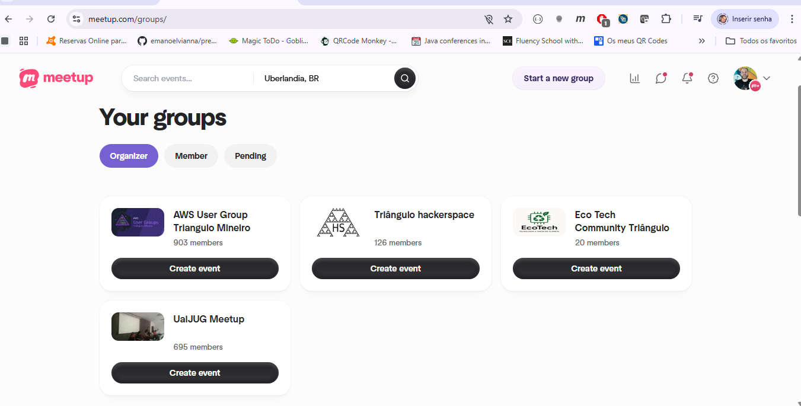
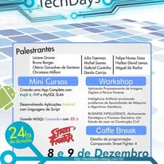
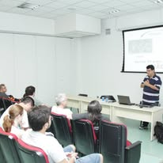
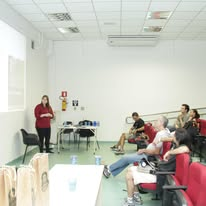
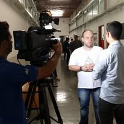
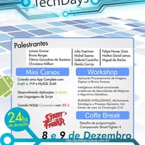
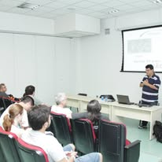
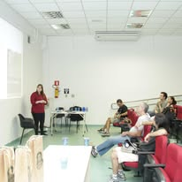
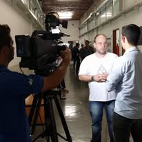

Criar comunidade é fácil.
Manter é outra história.
Minha jornada criando e mantendo comunidades técnicas desde 2006
👋 Quem sou eu
Rogerio Fontes Tomaz (Presuntinho)
- Organizador de comunidades técnicas
- Palestrante (Comunidades, TDC, etc)
- Arquiteto de Soluções e Sistemas / Especialista: Java|GO|Cloud
📲 Conecte-se comigo
Escaneie para se conectar
🤝 Comunidades

“Comunidades técnicas: código, pessoas e propósito”
- Lições reais de quem começou com 6 pessoas numa sala
Pensamento
- Comunidades não são empresas, nem produtos.
- São pessoas com um propósito comum — e isso exige visão, constância e maturidade emocional.
2006: tudo começou pequeno
- Pouco conteúdo na internet
- Estudar sozinho não funcionava
- Grupo de estudos virou comunidade
O começo despretensioso
- Grupo de estudo → virou JUG (Oficial)
- Sem expectativa de escala
- Crescimento veio depois
Nossa Comunidade
 







Primeiros desafios
- Divulgação
- Espaço
- Engajamento
- Medo de flopar
O que me manteve firme
- Propósito claro: aprender e compartilhar
- Alinhamento com outros organizadores
- Constância: mesmo quando era difícil
O primeiro meetup teve 6 pessoas. Mas um dos melhores meetups que já fiz teve só 3 pessoas na plateia — e foi incrível.
O que mantém uma comunidade viva
- Propósito claro
- Alinhamento de visão entre organizadores
- Troca sincera de experiências e ideias
- Constância
Bastidores que ninguém conta
- Cansaço
- Gente que some
- Bancar evento do próprio bolso
Bastidores que ninguém conta
- Organizador que some quando não recebe aplauso
- Pessoas que querem título sem contribuir
- Cansaço
- Bancar evento do próprio bolso
- Gerenciar familia, trabalho e comunidade
Comunidade quase nunca dá glória. Dá trabalho.
O retorno é crescimento, aprendizado e gente foda no caminho..
O que mata aos poucos
- Falta de propósito
- Engajamento por motivos errados
- Ego
- Pessoas buscando status, não contribuição
- Falta de troca sincera de experiências e ideias
- Falta de constância
Comunidade não é empresa.
É mais parecida com cultura de skate: pertencimento, identidade e respeito.
Formalização minimamente necessária (Sem virar OSCIP)
- Criar regras claras
- Alinhar expectativas
- Diminuir o ego
- Comunidade não é sobre você, é comunidade é sobre o coletivo. Se o ego falar mais alto, a comunidade perde.
O que isso trouxe pra mim
- Networking
- Visibilidade
- Oportunidades de freelas
- Evolução técnica
- Falar em público
O que isso gerou nos outros
- Pessoas que mudaram de carreira
- Feedbacks reais
- Oportunidades de freelas
- Crescimento coletivo
Técnica de Feynman aplicada na prática
- Ensinar me forçou a entender de verdade.
- Ter Aprendizado acelerado
- Comunidade como laboratório de aprendizado
3 erros comuns
- Tratar comunidade como empresa
- Achar que é fácil
- Não estar preparado pra tocar sozinho
3 boas práticas
- Empatia e respeito
- Ambiente seguro
- Colaboração ativa
O que você precisa antes de criar uma comunidade
- Sede de aprendizado
- Disposição pra servir
- Consistência
Comunidade é divergência de pensamento com um objetivo comum.
Consideração final
- Se você sente que aprende melhor junto → crie ou fortaleça uma comunidade
- Se você participa → contribua, não só consuma
- Se você lidera → cuide de pessoas, não de números
✈️ O que o Super Tucano nos ensina?
- Não é o mais rápido
- Não é o mais famoso
- Mas é o que funciona quando o cenário é difícil
E é ser como uma onça (inspiração para o super tucano): paciente, observando, construindo base — e quando chega a hora, dar o bote certo.
Comunidade não é sobre hype. É sobre permanecer.
🐆 O que comunidades precisam?
- Resiliência para continuar
- Paciência para construir
- Bote certeiro para agir
Comunidade não é glamour. É constância no mundo real.
🎯 O que Big Techs avaliam em um User Group?
- Consistência → frequência e histórico ao longo do tempo
- Liderança estruturada → não depender de uma única pessoa
- Alinhamento de valores → ambiente seguro e profissional
- Impacto real → formação de pessoas, não só eventos
- Governança → maturidade, responsabilidade e reputação
Comunidade forte não é a que faz barulho. É a que permanece relevante.
🌍 O poder das Comunidades Oficiais
Comunidades oficiais conectam você a:
- 🇧🇷 Outros líderes do Brasil
- 🌎 Líderes globais
- 🚀 Programas e iniciativas internacionais
- ✈️ Oportunidades além da sua cidade
Você começa local. Mas o impacto é global.
Obrigado 🙌
Vamos construir juntos?